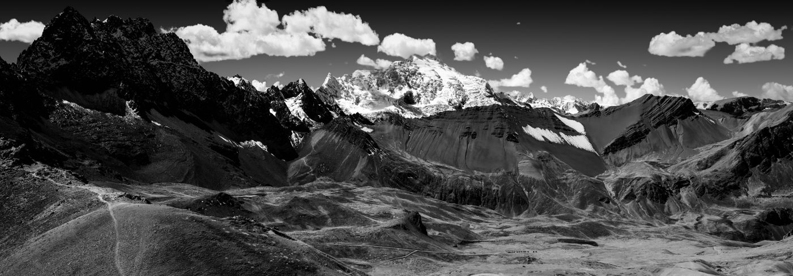
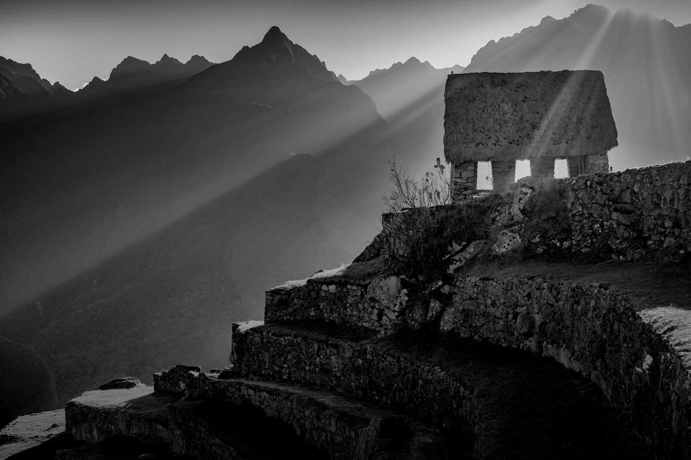
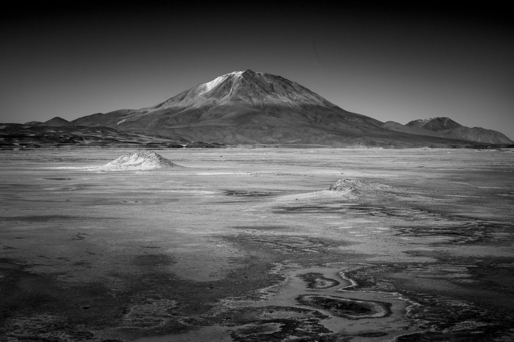
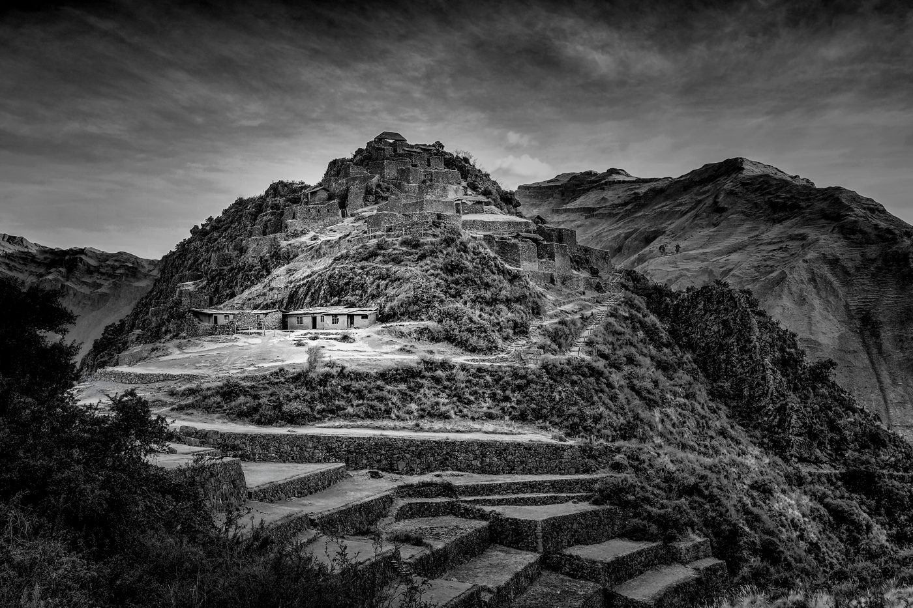
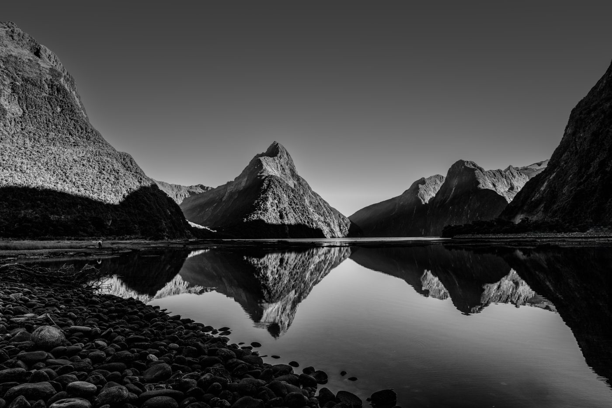
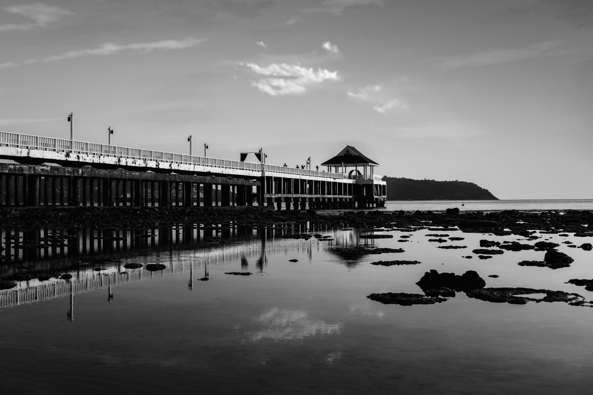

Fine art photography · Sydney
We are Carolina & Alan, photographers inspired by beauty, nature, colours and quiet moments. We captured every image you see here: the Andes, the Bolivian altiplano, Machu Picchu, the sea.
Our photographs are printable wall art and greeting cards, each an instant digital download to print at home or at a print shop.





